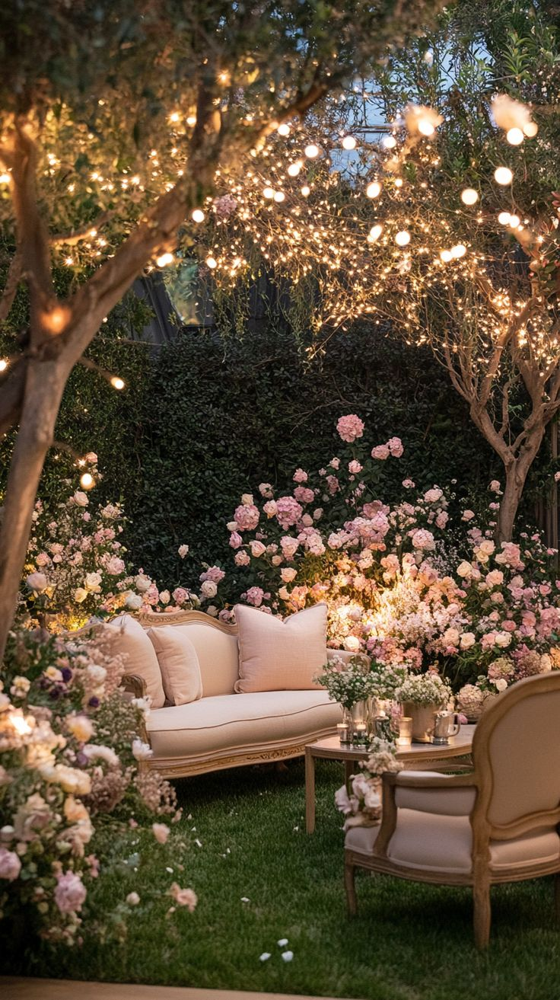

| IMAGEN | NOMBRE | DESCRIPCION | PRECIO |
|---|---|---|---|
|
Ramo de Flores Grande Clasico | Ramo de rosas, tulipanes, girasoles o lirios. | $250 |
|
Ramo de flores Chico Clasico | Ramo de rosas, tulipanes, girasoles o lirios. | $50 a $150 |
|
Ramo de Flores personalizado | Ramo de flores a tu eleccion y tonos | $100 a $300 |
|
Centros de mesa para eventos | Centros de Mesas personaizados | $50 a $100 por pieza |
|  | Decoracion Personalizada | Decoracion de flores ya sea entradas lugares o techo | Entre $500 a $5000 |